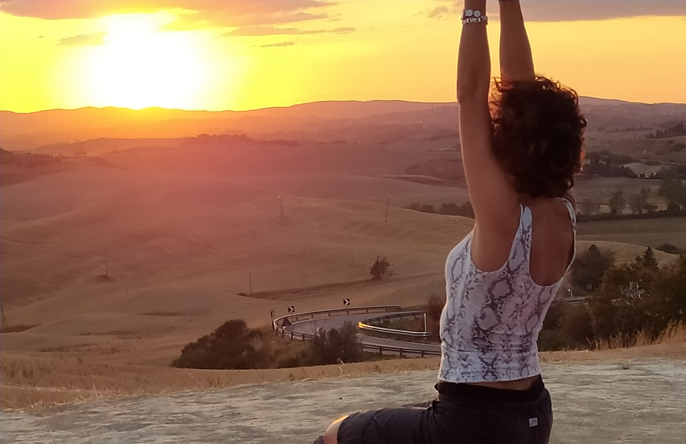

La pratica
Una disciplina olistica che lavora su corpo fisico, energia, mente e stabilita emotiva, con risultati progressivi e profondi nella vita quotidiana.
Il Kundalini Yoga rafforza la muscolatura, mantiene elastica la colonna vertebrale, sostiene il sistema endocrino e aiuta a riequilibrare il sistema nervoso.
La meditazione rende la mente più ferma e concentrata, facilitando un atteggiamento di lucidita anche nelle situazioni sfidanti.
Secondo la tradizione yogica, l'essere umano non è solo materia: esistono livelli energetici sottili che possono essere risvegliati e armonizzati attraverso la pratica.
Il termine Kundalini richiama un'energia latente, descritta come avvolta alla base della colonna, pronta a esprimersi quando il praticante sviluppa padronanza di sè, disciplina e ascolto.

La pratica costante trasforma l'energia potenziale in azione consapevole. Questo passaggio, nel tempo, porta a una vita piu stabile, creativa e centrata.
Ogni lezione è un lavoro su respiro, concentrazione e focalizzazione: un invito concreto a ritrovare equilibrio nel corpo e chiarezza nella mente.